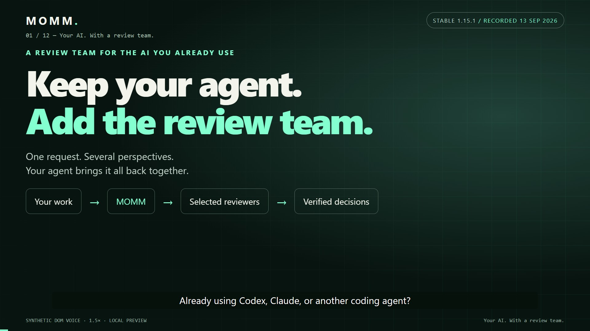
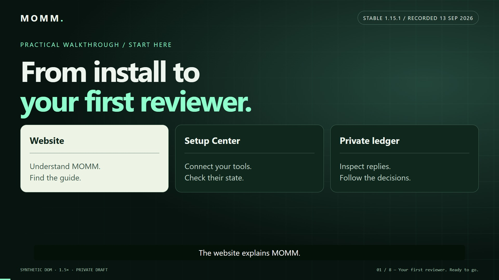
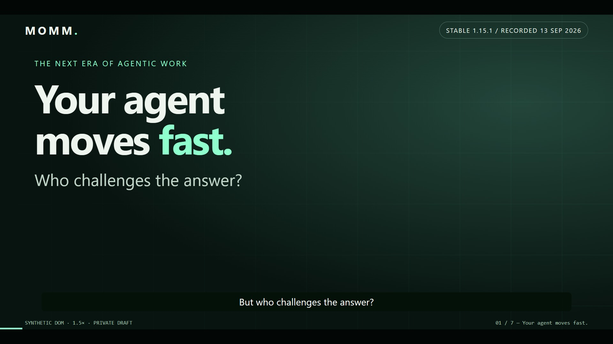

WATCH · LEARN · CHECK
The MOMM media gallery.
Choose the explanation you need. These are different edits, not extra reviews or independent evidence.
Current checkout release: 1.16.0. Recording versions below stay attached to their original films. Read the release notes for changes since recording.
Start here

3 minutes 40 secondsThe full introduction
Keep your agent. Add the review team.
See what MOMM means, why to use multi-model review, and how to install it, connect reviewers and inspect the private ledger.
MOMM 1.15.1 · recorded 2026-09-13 · consented synthetic Dom voice, 1.5×
Watch, captions & transcript →Get connected

2 minutes 24 secondsA focused setup walkthrough
Dashboard & setup: your first ready reviewer
Install MOMM, open your local Setup Center, connect a reviewer and return to your project for a first review.
MOMM 1.15.1 · recorded 2026-09-13 · consented synthetic Dom voice, 1.5×
Watch, captions & transcript →The short version

51 secondsA brief introduction; overlaps with the full film
The MOMM trailer: your agent just got a review team
Keep your agent. Add the review team. A short film about the practical workflow, real disagreements and decisions you can inspect.
MOMM 1.15.1 · recorded 2026-09-13 · consented synthetic Dom voice, 1.5×
Watch, captions & transcript →